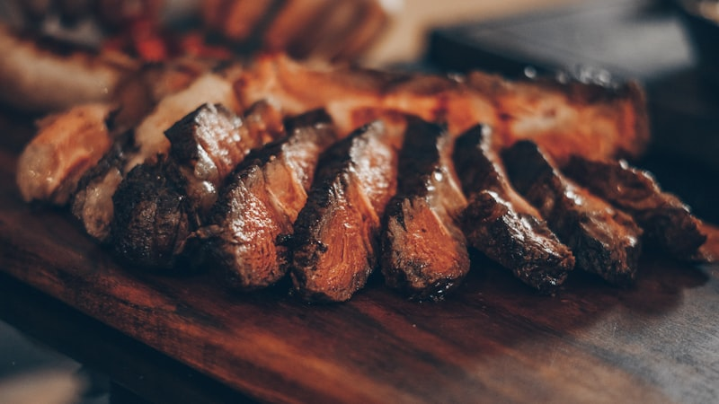

Mar
Peixe Fresco do Dia
Grelhado na hora, com acompanhamentos da época. Uma selecção variada que muda diariamente, sempre fresca e bem preparada.
Sabores autênticos da cozinha portuguesa — peixe fresco, carnes grelhadas e o coração de uma tasca de família.
Tradição portuguesa à mesa, todos os dias
O Zé Borlas é um restaurante familiar no coração de São Pedro do Estoril, onde a cozinha portuguesa é levada a sério. Pratos do dia, peixe fresco, carnes tenras e sobremesas caseiras — tudo preparado com os melhores ingredientes e servido com o calor genuíno de quem gosta do que faz.
Com 411 avaliações e uma média de 4.7 estrelas, a reputação fala por si. Cada refeição é um momento para recordar.
Pratos do dia e especialidades da casa
Grelhado na hora, com acompanhamentos da época. Uma selecção variada que muda diariamente, sempre fresca e bem preparada.

Tão tenra que se corta com uma colher. Acompanhada de salada fresca e batatas fritas caseiras — um clássico que os clientes adoram.

Doces feitos com o cuidado de sempre. As sobremesas do Zé Borlas são simplesmente superiores, frescas e com doses generosas.
"O chef recebe os clientes com uma simpatia genuína — e a comida está à altura." — Vera, cliente frequente
Opiniões reais de quem visita o Zé Borlas
★★★★★"Typical Portuguese food tasty and well prepared with diverse fish and meat selections. Daily specials available."
— Tina
★★★★★"Fresh fish, superb desserts, generous doses and 5-star service. Chef is very welcoming."
— Vera
★★★★★"Argentine picanha steak tender enough to cut with a spoon. Really fresh salad and homemade chips. Attentive service."
— Katharine
Todos os dias da semana — almoço e jantar
Venha saborear a melhor cozinha portuguesa em Cascais
Rua 9 de Abril 17-B
São Pedro do Estoril, 2765-609